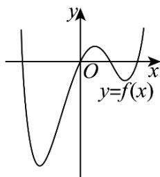
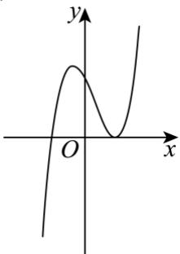
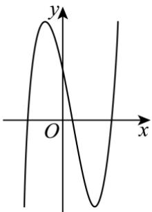
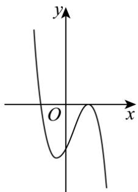
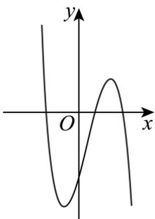
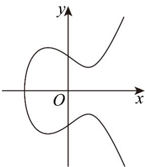

深圳中学 2024 级高二数学周测（5）
命题人：赵志伟
一、单选题
1. 已知 \(f'(x)\) 是函数 \(f(x)\) 的导函数，且 \(f(x) = 2f'(1)\ln x + \frac{1}{x}\) ，则 \(f'(1) = (\quad)\)
A. 1
B. 2
C. -1
D. -2
2. 已知函数 \(f(x) = \cos x + ax\) 在 \(\mathbf{R}\) 上单调递增，则实数 \(a\) 的取值范围是（）
A. \((- \infty, 0]\)
B. \([0,1]\)
C. \([1, +\infty)\)
D. \(\mathbf{R}\)
3. 曲线 \(y = x \ln x\) 在 \(x = 1\) 处的切线与两坐标轴所围成的三角形的面积为（）
A. 4
B. 3
C. 1
D. \(\frac{1}{2}\)
4. 设 \(x \in \mathbb{R}\) ，则“ \(x - \sin x < 0\) ”是“ \(x < 0\) ”的（）
A. 充分不必要条件
B. 必要不充分条件 C. 充要条件
D. 既不充分也不必要条件

5. 已知函数 \(f(x)\) 在定义域内可导， \(f(x)\) 的大致图象如图所示，则其导函数 \(f'(x)\) 的大致图象可能为（）

A.

B.

C.

D.
6. 已知函数 \(f(x) = \ln (\mathrm{e}^{2x} + 1) - x\) ，若 \(x \in [1,2]\) 时，关于 \(x\) 的不等式 \(f(2x + 1) < f(x + a)\) 恒成立，则实数 \(a\) 的取值范围为（）
A. \((-7, -4) \cup (2,3)\)
B. \((-7, -3) \cup (2,4)\)
C. \((- \infty, -7) \cup (3, +\infty)\)
D. \((- \infty, -4) \cup (2, +\infty)\)
7. 已知定义域为R的函数 \(f(x)\) ，其导函数为 \(f'(x)\) ，且 \(f'(x) + 2f(x) < 0, f(0) = 1\) ，则（）
A. \(f(-1) < e^2\)
B. \(f(1) < \frac{1}{e^2}\)
C. \(f\left(\frac{1}{2}\right) > \frac{1}{e}\)
D. \(ef(1) > f\left(\frac{1}{2}\right)\)
8. 已知函数 \(f(x) = a\mathrm{e}^x - x^2 + 3\) 有三个不同的零点，则实数 \(a\) 的取值范围是（）
A. \(\left(0, \frac{6}{\mathrm{e}^3}\right)\)
B. \(\left(0, \frac{2}{\mathrm{e}}\right)\)
C. \(\left(-2\mathrm{e}, \frac{6}{\mathrm{e}^3}\right)\)
D. \(\left(-2\mathrm{e}, \frac{2}{\mathrm{e}}\right)\)
二、多选题
9. 下列求导数运算中不正确的是（）
A. \((4)' = 2\)
B. \((\ln x)' = \frac{1}{x \ln 10}\)
C. \((3^{x})' = x \cdot 3^{x-1}\)
D. \((x^{5})' = 5x^{4}\)
10. 设计一个实用的门把手, 其造型可以看作图中的曲线 \(C: y^{2} = x^{3} - 2x + 2\) 的一
A. 点 \((1,1)\) 在 \(C\) 上 B. 将 \(C\) 在 \(x\) 轴上方的部分看作函数 \(f(x)\) 的图象, 则 1 是 \(f(x)\) 的极小值点 C. \(C\) 在点 \((1,1)\) 处的切线与 \(C\) 的另一个交点的横、纵坐标均为有理数 D. \(x < 0\) 时, 曲线 \(C\) 上任意一点到坐标原点 \(O\) 的距离均大于 \(\sqrt{2}\)

11. 已知函数 \(f(x) = \sin 2x - 2\sin x\) ，则（）
A. \(f(x)\) 的最小正周期为 \(2\pi\)
B. 曲线 \(y = f(x)\) 关于直线 \(x = \frac{\pi}{2}\) 对称 C. \(f(x)\) 在区间 \([-2\pi, 2\pi]\) 上有 4 个零点 D. \(f(x)\) 在区间 \(\left(\frac{\pi}{3}, \frac{2\pi}{3}\right)\) 内单调递减
三、填空题
12. 函数 \(y=\frac{1}{2}x^{2}-\ln x\) 的单调递减区间为 ____.
13. 若函数 \(f(x) = x + \frac{4}{x} + 3\ln x\) 在 \((a, 2 - 3a)\) 内有最小值，则实数 \(a\) 的取值范围是 ____.
14. 已知函数 \(f(x) = \begin{cases} 6\ln x, & x > 0, \\ mx^2 + 6x, & x < 0. \end{cases}\) 若关于 \(a\) 的方程 \(f(a) = f(-a)\) 恰有四个不同的解，则正数 \(m\) 的取值范围为 ____.
四、解答题
15. （1）证明： \(\forall x\in \mathbb{R}\) ， \(\mathrm{e}^x\geq \mathrm{ex}\)
（2）已知函数 \(f(x)=\left(x^{2}+ax+4\right)e^{x}\) （ \(x\in R,\quad a\in R,\quad e\) 为自然对数的底数）.
（I）当a=4时，求函数 \(f(x)\) 的单调区间；
（II）若函数 \(y = -f(x)\) 在[1,3]上单调递增，求实数 \(a\) 的取值范围.
16. 已知函数 \(f(x) = x - 2 + a\ln \frac{1}{x} (a \in \mathbf{R})\) .
（1）若 \(f(x)\geq -1\) ，求 \(\pmb{a}\) 的值；
（2）设 \(n\in \mathbf{N}^*\) ，求证： \(\frac{1}{3} +\frac{1}{4} +\mathrm{L} + \frac{1}{n + 2} < \frac{1}{2}\ln \frac{(n + 1)(n + 2)}{2}.\)
17. 已知函数 \(f(x)\) 的定义域为 \((0, +\infty)\) ，其导函数 \(f'(x) = 2x + \frac{2}{x} - 2a (a \in \mathbf{R}), f(1) = 1 - 2a\) .
（1）求曲线 \(y = f(x)\) 在点 \((1, f(1))\) 处的切线 l 的方程，并判断 l 是否经过一个定点；
（2）若 \(\exists x_{1},x_{2}\) ，满足 \(0 < x_{1} < x_{2}\) ，且 \(f^{\prime}(x_1) = f^{\prime}(x_{2}) = 0\) ，求 \(2f(x_{1}) - f(x_{2})\) 的取值范围.
18. 已知函数 \(f(x) = \frac{\ln x + a}{x}, a \in \mathbf{R}\) .
（1）求函数 \(f(x)\) 在区间[1,2]上的最大值；
（2）当 \(a = 1\) 时，若 \(\mathrm{e}^x\geq f(x) + m\) 恒成立，求实数 \(m\) 的取值范围.
19. 设函数 \(f(x) = \ln x + \frac{1 - a}{x} (a \in \mathbf{R})\) .
（1）若 \(f(x) \geq 0\) 恒成立，求 a 的取值范围；
(2) 若 \(f(x)\) 有两个零点 \(x_{1}, x_{2}\) ，证明： \(x_{1} + x_{2} > 2 - 2a\) .